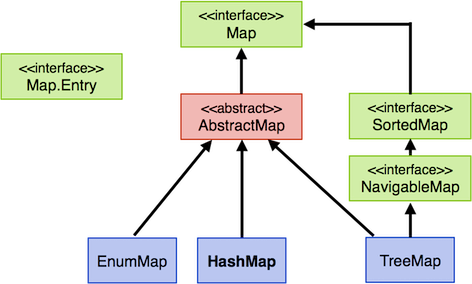
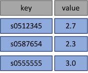
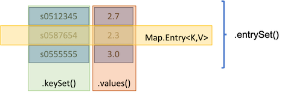

Maps¶
Maps sind auch Collections. Maps sind Mengen von Schlüssel-Werte-Paaren. Wir können uns Maps als zweispaltige Tabellen vorstellen, in denen die linke Spalte die Schlüssel (keys) enthält und die rechte Spalte die Werte (values). Die Schlüssel in einer Map sind immer eindeutig, d.h. keine zwei Schlüssel in einer Map sind gleich. Tatsächlich handelt es sich bei der Menge der Schlüssel um eine Set.
Obwohl Maps Collections sind, wurde für sie nicht das Interface Collection implementiert, so wie für Listen und Mengen, sondern ein eigenes Interface Map. Für Interessierte lohnt sich vielleicht auch ein Blick in die Collections Framework Documentation und das Collections Framework Tutorial.
Statt add() und addAll() hier put() und putAll()¶
Da nicht das Collections-Interface für Maps implementiert wurde, erfolgt das Hinzufügen eines Schlüssel-Werte-Paares zu einer Map leider auch nicht über add() bzw. das Hinzufügen einer Collection nicht über addAll(), sondern über
put(K key, V value)undputAll(Map m).
K ist dabei ein Platzhalter für den Typ der Schlüssel und V ein Platzhalter für den Typ der Werte.
Typ einer Map und Typ eines Schlüssel-Werte-Paares¶
Eine Map wird also mit zwei Typen typisiert:
Map<K, V>
wobei K den Typ der Schlüssel und V den Typ der Werte definiert.
Der Typ eines einzelnen Schlüssel-Werte-Paares ist
Map.Entry<K,V>
Das sieht für uns natürlich auch erstmal ungewöhnlich aus. Entry ist eine innere Klasse in der Klasse Map (tatsächlich sind beides Interfaces). Wir nehmen das erstmal einfach so hin und merken uns: der (typisierte) Typ einer Map ist Map<K,V> und der (typisierte) Typ jedes einzelnen Schlüssel-Werte-Paares in dieser Map ist Map.Entry<K,V>.
Statt iterator() hier entrySet()¶
Die Objektmethode iterator() gibt es für Map leider auch nicht. Stattdessen wird hier die Methode entrySet() verwendet. Da es sich bei einer Map um eine Set von lauter Schlüssel-Werte-Paaren (jeweils Typ Map.Entry<K,V>) handelt, liefert entrySet() eine
Set<Map.Entry<K,V>>
zurück. Lassen Sie sich von dieser kryptischen Schreibweise nicht abschrecken! Zurückgegeben wird eine Set. Diese ist typisiert und zwar mit dem Typ Map.Entry, welches der Typ eines einzelnen Schlüssel-Werte-Paares ist. Map.Entry ist selbst typisiert, nämlich mit dem Typ der Schlüssel K und dem Typ der Werte V. Für K und V werden bei Verwendung konkrete Typen eingesetzt. Hier sind es zunächst nur Platzhalter.
Klassenbaum für Map¶
Der Klassenbaum für Map hat Ähnlichkeiten zum Klassenbaum für Collection. Wir finden hier wieder grüne (Interfaces), rote (abstrakte Klassen) und blaue (konkrete Klassen) Felder.

Auch hier ist es wieder so, dass wir Map als Typ für eine Map verwenden, aber für die Erzeugung konkreter Objekte die Klassen EnumMap, HashMap und TreeMap verwenden. Die am häufigsten verwendete Klasse ist HashMap, da sie am performantesten arbeitet. Sobald Reihenfolge/Sortierung eine Rolle spielt, wird TreeMap verwendet.
Erstes Beispiel¶
Wir betrachten ein erstes Beispiel. Wir erstellen eine HashMap und fügen vier Einträge hinzu:
1 2 3 4 5 6 7 8 9 10 11 12 13 14 | |
- In Zeile
8wird unsereMaperzeugt. Die Referenzvariable auf dieMapheißtm. Die Schlüssel sind vom TypStringund die Werte sind vom TypDouble. Das konkrete Objekt wird durch den Aufruf des Konstruktors der KlasseHashMaperzeugt. - In Zeile
9fügen wir mithilfe derput()-Methode ein neues Schlüssel-Werte-Paar hinzu. Der Schlüssel (key) ist"s0512345", der Wert (value) ist1.7. Beachten Sie, dass hier ein Auto-Boxing desdouble-Wertes1.7in einDoublestattfindet. - In Zeile
10fügen wir mithilfe derput()-Methode ein weiteres Schlüssel-Werte-Paar hinzu. Der Schlüssel (key) ist"s0587654", der Wert (value) ist2.3(erneut Auto-Boxing). - In Zeile
11wird erneut dieput()-Methode aufgerufen. Der Schlüssel"s0512345"existiert jedoch bereits. Deshalb wird nur der Wert geändert. Aus dem alten Wert1.7wird nun2.7. DieMapenthält nach dieser Anweisung (noch nur) zwei Einträge. - In Zeile
12fügen wir mithilfe derput()-Methode ein weiteres Schlüssel-Werte-Paar hinzu. Der Schlüssel (key) ist"s0555555", der Wert (value) ist3.0(erneut Auto-Boxing).
Nach diesen Anweisungen sieht unsere Map also wie folgt aus (die Überschriften der Tabelle dienen nur der Orientierung):

Die folgende Abbildung zeigt die Methoden, um Zugriff auf die Werte, Schlüssel und alle Einträge zu erhalten:

Die Anwendung dieser Methoden auf unsere Map m zeigen die folgenden Anweisungen:
1 2 3 | |
- die Objektmethode
keySet()liefert die Menge aller Schlüssel zurück; Rückgabetyp istSet<K>, - die Objektmethode
values()liefert eine Collection aller Werte zurück; Rückgabetyp istCollection<V>, - die Objektmethode
entrySet()liefert die Menge aller Schlüssel-Werte-Paare zurück; Rückgabetyp istSet<Map.Entry<K,V>>
Durch eine Map laufen¶
Um alle Schlüssel-Werte-Paare einer Map zu extrahieren, können wir, wie bereits erwähnt, die Methode entrySet() verwenden. Für den Rückgabetyp Map.Entry<K,V> stehen uns zwei weitere Objektmethoden zur Verfügung:
getKey()liefert den Schlüssel des Schlüssel-Werte-Paares zurück; Rückgabetyp istK,getValue()liefert den Wert des Schlüssel-Werte-Paares zurück; Rückgabetyp istV.
Wir betrachten für unsere Map m ein Beispiel:
1 2 3 4 | |
1 wird die Methode m.entrySet() aufgerufen, diese gibt eine Set<Map.Entry<String, Double>> zurück. Jeder einzelne Eintrag in dieser Set ist also vom Typ Map.Entry<String,Double>. Deshalb verwenden wir diesen Typ für unsere Variable eintrag. Wir nutzen hier also erneut die for-each-Schleife, um durch eine Set zu laufen.
- In Zeile 3 verwenden wir die Objektmethoden getKey() und getValue(), die uns von Map.Entry zur Verfügung gestellt werden. getKey() gibt uns hier einen String zurück (den Schlüssel) und getValue() gibt hier ein Double zurück (den Wert). Hier erfolgt eine automatische Konvertierung von Double nach String (impliziter Aufruf von toString() für Double).
Es erfolgt folgende Ausgabe:
s0512345 : 2.7
s0555555 : 3.0
s0587654 : 2.3
Wir sehen also, dass die Reihenfolge des Einfügens der Elemente nicht gewahrt bleibt. Die Schlüssel werden auch nicht sortiert, das sieht hier nur so aus.
Wir probieren auch noch die Objektmethoden keySet() und value() aus, die für eine Map zur Verfügung stehen:
for(String schluessel : m.keySet())
{
System.out.println("key : " + schluessel);
}
erzeugt:
key : s0512345
key : s0555555
key : s0587654
und
for(Double wert : m.values())
{
System.out.println("value : " + wert.toString()); // toString() wuerde auch implizit aufgerufen
}
erzeugt:
value : 2.7
value : 3.0
value : 2.3
Übung
Was wird ausgegeben?
Map<String, String> accounts = new HashMap<>();
accounts.put("anton", "anton@email.de");
accounts.put("berta", "berta@email.de");
accounts.put("caesar", "caesar@email.de");
accounts.put("anton", "antonius@email.de");
// Iteration ueber alle Eintraege (Map.Entry) der Map
for(Map.Entry<String, String> entry : accounts.entrySet())
{
System.out.println("Account : " + entry.getKey() + " E-Mail : " + entry.getValue());
}
Zusammenfassung Maps¶
- Maps speichern Referenztypen als Schlüssel und Werte
- Maps werden typisiert mit
K(Platzhalter für den Referenztyp des Schlüssels) undV(Platzhalter für den Referenztyp des Wertes) - Maps enthalten eindeutige Zuordnungen von einem Wert zu einem Schlüssel (aber nicht umgekehrt)
- der Zugriff auf alle Einträge/Schlüssel/Werte erfolgt über Sets/Collection
- der Typ eines einzelnen Schlüssel-Werte-Paares ist
Map.Entry<K,V>
Hier noch ein Überblick über die wichtigsten Objektmethoden für eine Map. Weitere Methoden finden Sie hier.
| Objektmethode | Beschreibung |
|---|---|
V get(K key) |
Gibt den Wert zum Schlüssel key zurück. Ist der Schlüssel key nicht in der Map enthalten, wird null zurückgegeben. |
V put(K key, V value) |
Fügt einen neuen Eintrag mit dem Schlüssel key und dem Wert value in die Map ein. Wenn ein Eintrag für Schlüssel key bereits existiert, wird der value überschrieben. |
void putAll(Map |
Fügt alle Element der Map m in die Map ein. Wenn ein Eintrag für einen Schlüssel bereits existiert, wird er überschrieben. |
void clear() |
Entfernt alle Elemente aus der Map. |
boolean containsKey(Object k) |
Gibt true zurück, wenn es einen Eintrag mit dem Schlüssel k in der Map gibt. Der Vergleich der Schlüssel mit dem Objekt k erfolgt mit der equals()-Methode. |
boolean containsValue(Object v) |
Gibt true zurück, wenn es einen Eintrag mit dem Wert v in der Map gibt. Der Vergleich der Werte mit dem Objekt v erfolgt mit der equals()-Methode. |
boolean isEmpty() |
Gibt true zurück, wenn sich keine Elemente in der Map befinden. |
V remove(Object key) |
Entfernt den Eintrag mit dem Schlüssel key aus der Map und gibt den dazugehörigen Wert zurück (wenn key in der Map enthalten ist, sonst null). |
int size() |
Gibt die Anzahl der Elemente in der Map zurück. |
Set |
Gibt eine Set mit allen Schlüsseln der Map zurück. |
Collection |
Gibt eine Collection mit allen Werten der Map zurück. |
Set |
Gibt eine Set mit allen Einträgen (Schlüssel-Werte-Paare) als Map.Entry der Map zurück. |